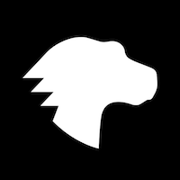
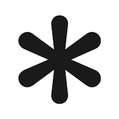

Miguel Tavares
Developer
For the past 4 years I've been doing support work for AppMachine, an app building platform. I want learn how to code because I want to do something more challenging and creative. My plan after finishing the bootcamp is to gain as much coding experience as I can, building my own projects and also looking for (freelance) work.
Resources
|  |
Mozilla Developer NetworkMDN Web Docs is an evolving learning platform for Web technologies and the software that powers the Web. |
|  |
CSS-TricksCSS-Tricks launched July 4th, 2007. It used to be, believe it or not, primarily about CSS! Over the years, CSS-Tricks has come to become a site about all things web design and development. |
 |
target="_blank"CodePenCodePen is a playground for the front end side of the web. It's all about inspiration, education, and sharing. |
Social